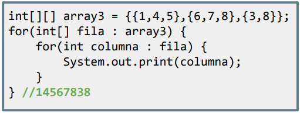
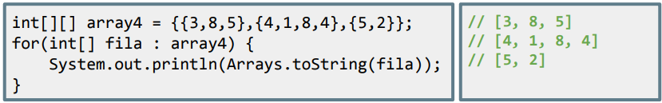

Como ya vimos con vectores, existen formas alternativas de recorrerlos. Para arrays de 2 dimensiones podemos hacerlo de forma abreviada de la siguiente manera:

int[][] array3 = {{1,4,5},{6,7,8},{3,8}};
for(int[] fila : array3) {
for(int columna : fila) {
System.out.print(columna);
}
} //14567838Imprimir matriz
Si lo que queremos es imprimir el contenido de una matriz podemos hacerlo usando el método .toString() de la clase Arrays, pero recorriendo las filas previamente:

int[][] array4 = {{3,8,5},{4,1,8,4},{5,2}};
for(int[] fila : array4) {
System.out.println(Arrays.toString(fila));
}